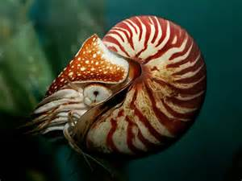

Il nautilo
Il nautilo si presenta come una grossa conchiglia (anche oltre i 20 cm di diametro a sezione di spirale logaritmica) con l'apertura rivolta verso l'alto in cui vive un corpo molle con una grossa testa composta da occhi grandi, un rugoso mantello posto a protezione di metà capo e carnosi tentacoli intorno ad un becco simile a quello di un pappagallo, con cui l'animale rompe le corazze dei crostacei di cui si nutre. I tentacoli sono molto numerosi, e organizzati in diversi ordini o anelli concentrici attorno alla bocca dell'animale; la gran parte di questi tentacoli è fissata alla base ad una sorta di "fodero" da cui il nautilo può estenderli o ritrarli a piacimento. A differenza di quelli di seppie, calamari e polpi, i tentacoli del nautilo non hanno ventose, ma la loro superficie ruvida e irregolare permette comunque una presa molto salda su qualunque oggetto solido.
La conchiglia ha una superficie liscia e bianca con screziature rosso arancio, è sottile e liscia, avvolta dorsalmente su uno stesso piano (avvolgimento esogastrico), il che tuttavia non implica una torsione dei visceri come nei gasteropodi. Altre specie presentano una conchiglia madreperlacea o di colore bianco brillante.
Il nicchio è concamerato, presenta cioè un canale che collega i vari compartimenti e permette al gas azotato ivi contenuto di passare attraverso i setti trasversali che delimitano le camere, favorendo il galleggiamento dell'animale, nella sua tipica posizione verticale, tramite opportune regolazioni di pressione. I setti, inoltre, sostengono strutturalmente la conchiglia quando l'animale si immerge a grandi profondità ed è sottoposto a pressioni notevoli. Il nautilo, intervenendo sulle varie percentuali di liquido e gas nei vari setti, effettua una grande escursione batimetrica (di profondità) tra il giorno (dove si sposta a profondità di 500 metri) e la notte (dove si avvicina alla superficie dell'oceano).
All'interno del nicchio sono presenti circa 34-36 zone divise da pareti di madreperla, chiamate setti, che aumentano di numero con l'aumentare dell'età: sono le camere che il corpo dell'animale occupa a mano a mano che aumenta di dimensione. Solo l'ultimo e più esterno dei setti è occupato costantemente dalle parti molli dell'organismo, dotato di circa 90 tentacoli privi di ventose, di un becco corneo, una radula ed un imbuto ottenuto dalla modificazione del tubo.
La deambulazione è libera: il nautilo si sposta espellendo con forza l'acqua dai sifoni del mantello, con una modalità però differente da quella degli altri cefalopodi; difatti in seppie e polpi il sifone è solo un tubo carnoso, e la spinta necessaria per espellere l'acqua attraverso di esso è fornita dalla contrazione di tutto il mantello, che è fortemente muscolare. Al contrario, nel nautilo il mantello è molto ridotto e senza muscoli, e la propulsione necessaria viene fornita dalla rapida contrazione del sifone, che nel nautilo è dotato di potenti muscoli. L'emissione del getto d'acqua provoca una spinta da cui deriva il movimento retrogrado (a "marcia indietro") dell'animale, che permette anche rapidi cambiamenti di direzione. Proprio all'interno del sifone sono posizionate le branchie, che sono così sempre ben ossigenate dalla continua corrente d'acqua che scorre nel sifone stesso.